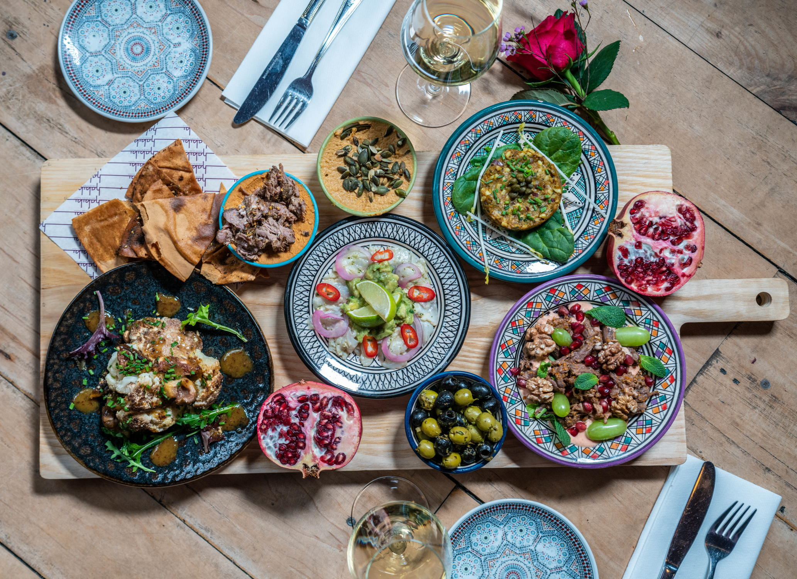
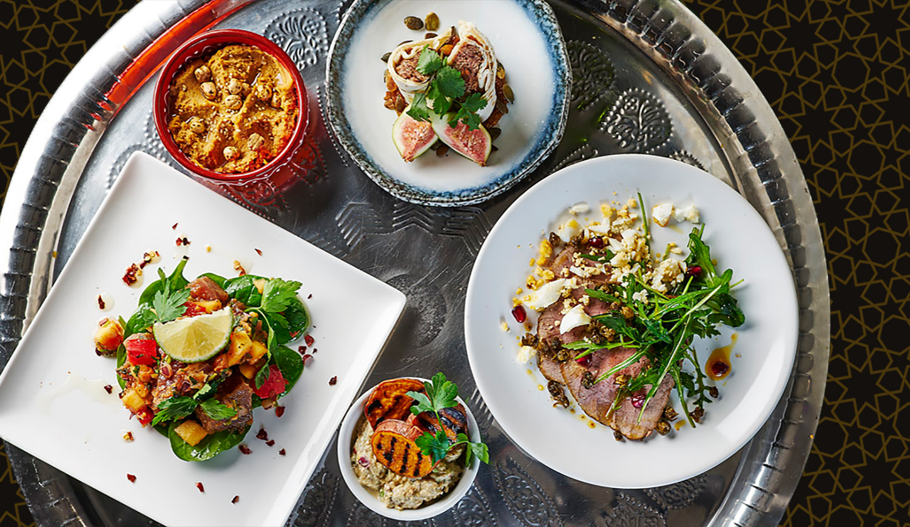
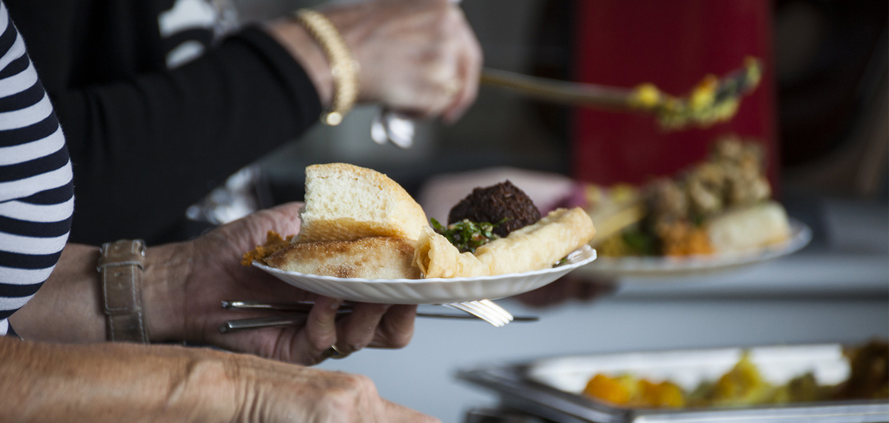

Mezze buffet
Vanaf 20 personen. 5 koude en 5 warme hapjes, onder andere verschillende vlees- en visgerechten en Arabisch brood met heerlijke smeersels.
Restaurant Habibi, Krommestraat 45 Amersfoort
Arabische tapas met een moderne twist, meesterlijke mezze en fantastische desserts. En bovenal: gastvrijheid.
Woensdag t/m zondag vanaf 17:00 Bel ook gerust: 033 879 54 52

In 2010 opende Restaurant Habibi zijn deuren, geïnspireerd door de rijke smaken en tradities van de Arabische keuken. Wat begon als een droom om authentieke gerechten te serveren, is uitgegroeid tot een geliefde plek waar gasten samenkomen voor bijzondere culinaire ervaringen.
Met een team van gepassioneerde chefs blijven we ons menu ontwikkelen, waarbij we traditionele Arabische gerechten combineren met moderne invloeden. Zo verrassen we je keer op keer.
We ontvangen je woensdag tot en met zondag vanaf 17:00. Kom langs en proef de passie die al bijna vijftien jaar centraal staat in alles wat we doen.

Habibi thuis op tafel. Afhalen kan van 17:00 tot 20:00 uur.
Goed eten tijdens je bedrijfsfeest, bruiloft of verjaardag? Vanaf tien personen verzorgt Restaurant Habibi catering op locatie: van mezze (Arabische tapas) en lunch tot een borrelbuffet of Arabische high tea. Samen kijken we naar de perfecte opties.
Desgewenst nemen we ook alle randzaken uit handen, van de verhuur van tafels en stoelen tot tafellinnen, servies, bestek en glaswerk. Met onze mobiele bar schenken we de heerlijkste (Arabische) wijnen. En onze foodtruck is te huur voor een verjaardag, trouwlocatie of bedrijfsevenement.

Vanaf 20 personen. 5 koude en 5 warme hapjes, onder andere verschillende vlees- en visgerechten en Arabisch brood met heerlijke smeersels.
Vanaf 20 personen. Een buffet met 4 heerlijke desserts.
7 verschillende koude hapjes met afwisselend vlees, vis en vega. Minimaal 10 stuks per soort hapje.
7 verschillende warme hapjes met afwisselend vlees, vis en vega. Minimaal 10 stuks per soort hapje.
Vanaf 20 personen. 5 gerechten, waaronder soep, wrap, pita, sandwich en een Marokkaans flensje toe.
Vanaf 10 personen. Hartige Marokkaanse hapjes zoals gevulde broodjes, pasteitjes en pita's, en huisgemaakte zoetigheden als baklava, Arabische cheesecake en mhancha gevuld met dadels en noten. Met diverse smaken thee en verse muntthee.
Restaurant Habibi heeft jarenlange ervaring met catering voor bruiloften. Alles wordt naar wens en in uitgebreide samenspraak met jullie bereid. Samen kijken we welke Arabische tapas en hapjes het best bij jullie passen, als buffet of met de foodtruck op jullie trouwlocatie.
Vraag naar de prijzen via info@restauranthabibi.nl of 033 879 54 52, of gebruik het formulier.
Met een groep van 20 personen of meer? Dan gaan we ook op maandag en 's middags open. Neem contact op voor de mogelijkheden.
Krommestraat 45
3811 CB Amersfoort
033 879 54 52
Reserveren: reserveernu@restauranthabibi.nl
Overig: info@restauranthabibi.nl
| Maandag | Gesloten |
|---|---|
| Dinsdag | Gesloten |
| Woensdag | 17:00 - 24:00 |
| Donderdag | 17:00 - 24:00 |
| Vrijdag | 17:00 - 24:00 |
| Zaterdag | 17:00 - 24:00 |
| Zondag | 17:00 - 24:00 |
De keuken is open tot 22:00 uur.
Feestdagen: 25 en 26 december gesloten, 31 december t/m 3 januari gesloten.
Parkeer het dichtst bij in Parkeergarage Stadhuisplein of Parkeergarage St. Jorisplein. Loop door de Molenstraat over de Bollebruggang, ga links de Breestraat in en dan de eerste rechts door de Paternostraat. Linksaf op de Langegracht en neem rechts de Kerkgang. Je komt uit op de Krommestraat: ga rechts, en je vindt ons aan de linkerkant.